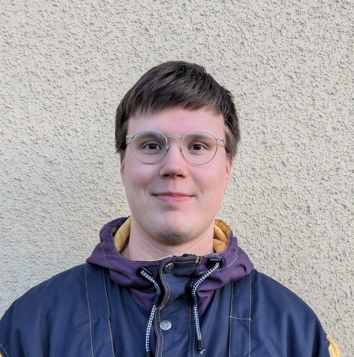
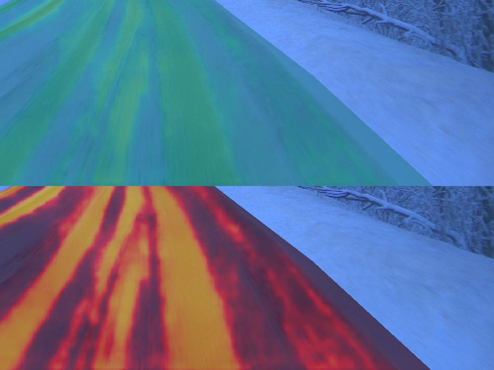
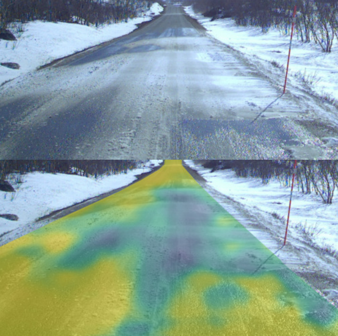
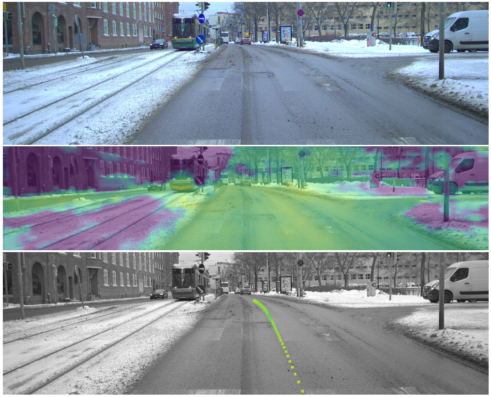

|
Julius Pesonen I'm a research scientist in the Spectrophotogrammetry research group at the Finnish Geospatial Research Institute. I'm currently pursuing a doctoral degree at Aalto University under the supervision of Dr. Arno Solin and I'm advised by Research Professor Eija Honkavaara. |
 |
{kind=link}
ResearchI'm interested in computer vision, deep learning, remote sensing and robotics. In my doctoral works, I'm exploring weakly supervised and real-time deep learning methods in practical remote sensing applications with limited inference resources. |
|

|
Road Grip Uncertainty Estimation Through Surface State Segmentation
Jyri Maanpää, Julius Pesonen, Iaroslav Melekhov, Heikki Hyyti, Juha Hyyppä Accepted to SCIA, 2025 paper Benchmark of uncertainty estimation methods in pixel-wise road surface grip prediction from RGB images and a novel approach using state segmentation. |

|
Detecting Wildfires on UAVs with Real-time Segmentation Trained by Larger Teacher Models
Julius Pesonen, Teemu Hakala, Väinö Karjalainen, Niko Koivumäki, Lauri Markelin, Anna-Maria Raita-Hakola, Juha Suomalainen, Ilkka Pölönen, Eija Honkavaara Proceedings of the Winter Conference on Applications of Computer Vision (WACV), 2025 code / paper / inference video / data UAV-onboard wildfire detection using small segmentation models distilled from larger ones with bounding box guidance. |
|

|
Dense Road Surface Grip Map Prediction from Multimodal Image Data
Jyri Maanpää, Julius Pesonen, Heikki Hyyti, Iaroslav Melekhov, Juho Kannala, Petri Manninen, Antero Kukko, Juha Hyyppä 27th International Conference on Pattern Recognition, ICPR 2024 code / paper Road slipperiness prediction from RGB, LiDAR, and thermal camera data for autonomous driving in adverse weather conditions. |
|

|
Pixelwise Road Surface Slipperiness Estimation for Autonomous Driving with Weakly Supervised Learning
Julius Pesonen Master thesis, 2023 Aaltodoc Road slipperiness prediction from RGB for autonomous driving in adverse weather conditions at input camera resolution. |
|
Click here to share the page with a QR code. Design and source code from Jon Barron's website. |
{kind=link}